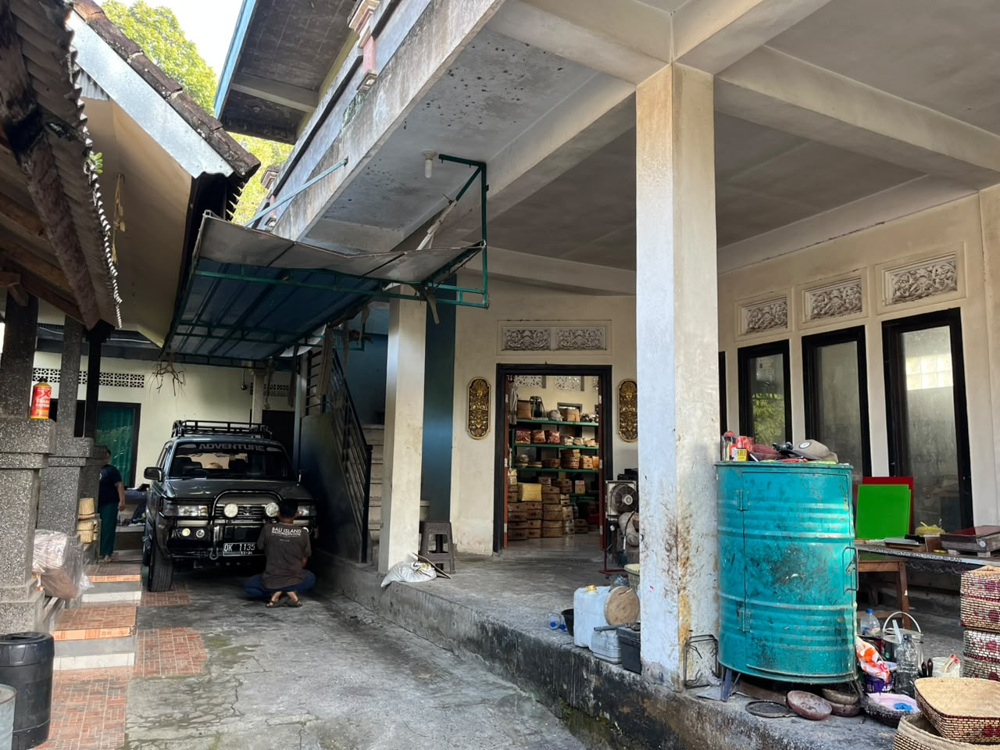
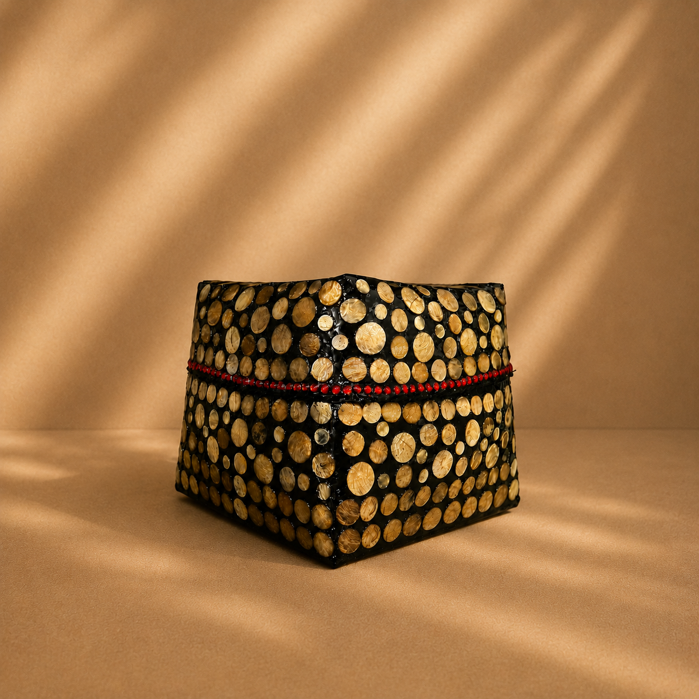

Tentang Kami
MOZAIK Bali Kerang merupakan usaha kerajinan dari Tabanan, Bali, yang menghadirkan karya dekoratif dengan keindahan alami kerang. Setiap produk dibuat dengan ketelitian untuk menampilkan karakter khas Bali yang unik, elegan, dan bernilai seni.
Setiap anyaman dipadukan dengan bahan pilihan seperti potongan rotan dan kerang yang telah dipersiapkan secara khusus, ditempelkan menggunakan lem berkualitas pada bagian luar anyaman, sementara bagian dalam tetap mempertahankan tekstur alami — menghasilkan produk yang kuat, tahan lama, dan tahan air.
Lihat Produk KamiKenapa Memilih Kami
Dalam Angka
Produk Terjual
Lebih dari 1 ribu produk berhasil terjual.
Pelanggan Setia
Pelanggan yang senantiasa mencari kami
Rating Rata-rata
Dinilai dari ribuan ulasan jujur pelanggan kami
Jangkauan luar Kota
Pengiriman online tersedia
Foto Kami
Berikut beberapa foto yang mewakili owner kami bertiga, mulai dari momen kebersamaan hingga karya yang kami bangun dengan penuh semangat.
Owner
Bagian dari tim MOZAIK Bali Kerang Developer website.
Team Support
Bagian dari tim MOZAIK Bali Kerang Developer website.
Team Support
Bagian dari tim MOZAIK Bali Kerang Developer website.
Temukan jawaban seputar produk, pemesanan, dan pengiriman kami.
Ya, setiap produk kami dibuat secara handmade oleh pengrajin lokal dengan ketelitian tinggi dan sentuhan tradisional.
Tentu. Kami menerima pemesanan untuk kebutuhan event, hadiah, maupun kebutuhan bisnis dengan sistem yang fleksibel.
Anda bisa melihat koleksi terbaru di halaman shop atau menghubungi kami langsung untuk informasi stok dan harga terkini.
Ya, kami melayani pengiriman ke berbagai daerah dengan sistem pengiriman yang dapat disesuaikan dengan kebutuhan pelanggan.
Kata Mereka
Kepuasan pelanggan adalah kebanggaan kami.
"Dulang yang saya pesan sangat rapi dan detail ukirannya. Sangat cocok untuk perlengkapan upacara di rumah. Pengiriman juga aman dan cepat."
"Kualitas sokasi dan bokornya luar biasa. Finishing halus, kuat, dan terlihat sangat elegan. Sudah beberapa kali memesan dan selalu puas."
"Produk anyamannya sangat berkualitas. Cocok dijadikan dekorasi rumah maupun hadiah. Pelayanan ramah dan responsif."
Hubungi Kami